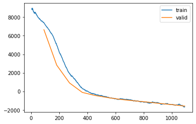

%load_ext autoreload
%autoreload 2Train Kalman filter using Fastai using float64
from meteo_imp.kalman.fastai import *
from meteo_imp.kalman.filter import *
from meteo_imp.utils import *
from meteo_imp.data import *
from fastai.tabular.learner import *
from fastai.learner import *
from fastai.callback.all import *
import pandas as pd
import torch
import numpy as npNameError: name 'ListNormal' is not defined@cache_disk("full_hai")
def load_data():
return read_fluxnet_csv(hai_path, None, num_dtype=np.float64)
hai = load_data()model = KalmanFilter(**KalmanFilterTester(dtype=torch.float64).params)dls = make_dataloader(hai, 200, 10, bs=10) len(hai) / 200 / 10 * .891.1808len(dls.train)91learn = Learner(dls, model, loss_func=imp_ll_loss, cbs=[ShowGraphCallback, Float64Callback])len(dls.train)91Only Gap Loss
learn.fit(10, 1e-3)| epoch | train_loss | valid_loss | time |
|---|
NotImplementedError: Module [KalmanFilter] is missing the required "forward" functionlearn.recorder.plot_loss()# learn.fit(10, 1e-2)# learn.recorder.plot_loss()# torch.save(learn.model, "trained_model_20_dec_f64.pickle")trained_state = learn.model.state_dict()Results
from meteo_imp.data_preparation import MeteoDataTest
from meteo_imp.kalman.imputation import KalmanImputationdef gap2res(var_sel, gap_len, gap_start, block_start=1000, block_end=1200):
data = MeteoDataTest(hai.iloc[block_start:block_end, :]).add_gap(gap_len, var_sel, gap_start)
imp = KalmanImputation(data.data)
imp.model.filter = learn.model # ensure float64 support
imp.model.filter.load_state_dict(trained_state)
return imp.to_result(data.data_compl_tidy, var_names= data.data.columns, units=units, pred_all=True)display_as_row(learn.model.get_info())check_posdef(learn.model.obs_cov.to(torch.float32))gap2res(var_sel, gap_start=30, gap_len=15, block_start=500, block_end=700).display_results()Loss All
compute the loss for all predictions not only the gap
learn = Learner(dls, model, loss_func=KalmanLoss(only_gap=False), cbs=[ShowGraphCallback, Float64Callback])learn.fit(10, 2e-3)learn.recorder.plot_loss()Horrible idea … probably by smoothing is too easy to predict the points that the parameters of the model have basically no influence.
Need to try with filtering
Loss Filter only
compute the loss for all predictions not only the gap
model = KalmanFilter(**KalmanFilterTester(dtype=torch.float64).params)model.use_smooth = Falsemodel.check_args = Nonelearn = Learner(dls, model, loss_func=KalmanLoss(only_gap=False), cbs=[ShowGraphCallback, Float64Callback])learn.fit(12, 2e-3)| epoch | train_loss | valid_loss | time |
|---|---|---|---|
| 0 | 7412.622489 | 6652.202241 | 03:45 |
| 1 | 5049.731810 | 2825.582725 | 03:44 |
| 2 | 1962.345019 | 903.253100 | 03:47 |
| 3 | 318.255686 | -117.658645 | 03:44 |
| 4 | -323.398913 | -448.278246 | 03:47 |
| 5 | -654.908696 | -679.999570 | 03:43 |
| 6 | -803.473786 | -873.061342 | 03:46 |
| 7 | -1016.195842 | -1018.383004 | 03:45 |
| 8 | -1142.367950 | -1148.339634 | 03:46 |
| 9 | -1260.992943 | -1299.262096 | 03:41 |
| 10 | -1431.255912 | -1435.102765 | 03:46 |
| 11 | -1686.184436 | -1593.321410 | 03:40 |

learn.recorder.plot_loss()
learn.fit(10, 1e-3)learn.recorder.plot_loss()learn.fit(10, 5e-4)learn.recorder.plot_loss()trained_state = learn.model.state_dict()Results
from meteo_imp.data_preparation import MeteoDataTest
from meteo_imp.kalman.imputation import KalmanImputationdef gap2res(var_sel, gap_len, gap_start, block_start=1000, block_end=1200):
data = MeteoDataTest(hai.iloc[block_start:block_end, :]).add_gap(gap_len, var_sel, gap_start)
imp = KalmanImputation(data.data)
imp.model.filter = learn.model # ensure float64 support
imp.model.filter.load_state_dict(trained_state)
return imp.to_result(data.data_compl_tidy, var_names= data.data.columns, units=units, pred_all=True)var_sel = data.data.columns%time gap2res(var_sel, 10, 10)gaps = [2, 5, 7, 10, 20, 30, 50, 100]
gap_starts = [0, 30, 60, 90]from ipywidgets import interact_manual, IntSlider